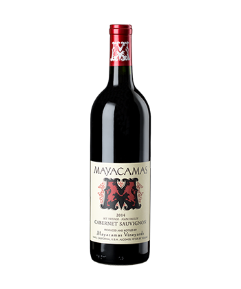

BEVERAGES
MAYACAMAS VINEYARDS CABERNET SAUVIGNON 2014
HERMANN J. WIEMER HJW VINEYARD RIESLING 2016
VIÑA VIK MILLAHUE 2013
KIR-YIANNI ESTATE RAMNISTA 2013

TABLAS CREEK VINEYARD ESPRIT DE TABLAS BLANC 2015
DELAMOTTE BLANC DE BLANCS BRUT 2008

AZIENDA AGRICOLA ARIANNA OCCHIPINTI SP68 SICILIA ROSSO IGT 2017
DAMILANO BAROLO LECINQUEVIGNE 2013